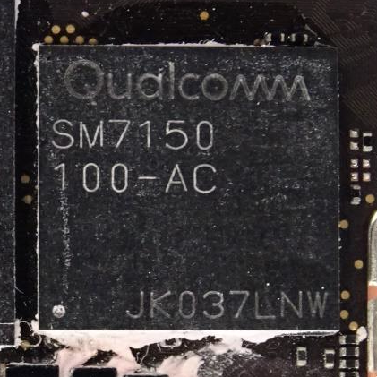

Qualcomm Snapdragon 730/730G/732G (SM7150)
Jump to navigation
Jump to search
|
 SM7150 in ceramic BGA package | |
| Manufacturer | Qualcomm |
|---|---|
| Name | SM7150 |
| Codenames | sdmmagpie |
| Architecture | aarch64 |
| CPU |
|
| GPU | Adreno 618 |
| Year | 2019/2020 |
| Process | 8nm |
| Mainline | yes |
| Community Page | https://github.com/sm7150-mainline |
| Components | |
| CPU |
Works
|
| UART |
Works
|
| Storage |
Works
|
| USB |
Works
|
| Display |
Works
|
| GPU |
Works
|
| Pinctrl |
Works
|
| I²C |
Works
|
| SPI |
Works
|
| Audio | |
| Video | |
| Thermal |
Works
|
| WiFi |
Works
|
| Bluetooth |
Works
|
| Modem |
Works
|
| GPS |
Works
|
| Camera | |
| Suspend | |
{kind=link}
SM7150-AA (Snapdragon 730), SM7150-AB (Snapdragon 730G) and SM7150-AC (Snapdragon 732G) are premium mid-range Qualcomm SoCs released in 2019 and 2020. Internal msm codename for this platform is sdmmagpie.
Contents
Devices
Snapdragon 730
| Device | Codename | Mainline |
|---|---|---|
| Xiaomi Mi 9T / Redmi K20 | xiaomi-davinci | Y |
Snapdragon 730G
| Device | Codename | Mainline |
|---|---|---|
| Google Pixel 4a | google-sunfish | Y |
| Lenovo Tab P11 Pro | lenovo-j706f | |
| Motorola Moto G9 Plus | motorola-odessa |
Snapdragon 732G
| Device | Codename | Mainline |
|---|---|---|
| Xiaomi Mi 11 Lite 4G | xiaomi-courbet | |
| Xiaomi POCO X3 NFC | xiaomi-surya | Y |
| Xiaomi Redmi Note 10 Pro | xiaomi-sweet | Y |
Mainline
A work in progress mainline kernel is being developed here.
There is a dedicated SM7150 Mainlining guide that explains how to get started.
- Kernel release, e.g. v6.4: the feature was incorporated upstream as of this release.
- WIP: Feature works or works partially in community kernel fork. Not upstream yet.
- Y: The feature works with a generic or compatible driver.
- N: Feature is not currently supported.
| Component | Part | Driver | Status | Notes |
|---|---|---|---|---|
| SoC | Snapdragon 730/730G/732G | WIP | ||
| Storage | UFS 2.1 | qcom,sm7150-ufshc qcom,ufshc jedec,ufs-2.0 |
v6.4 | |
| SD-Card (sdhc_2) | qcom,sdhci-msm-v5 | Y | ||
| USB Type C | USB 2.0 | P | Peripheral mode only | |
| USB 3.1 | N | Need a device that has this for tests | ||
| DisplayPort 1.4 | N | |||
| Display | SimpleFB | simple-framebuffer | Y | |
| DPU 5_2 | qcom,sm7150-dpu | WIP | ||
| DPU 5_2 with DSC 1.1 | N | |||
| GPU | Adreno 618 | qcom,adreno-618.0 qcom,adreno |
Y | |
| Pinctrl | qcom,sm7150-tlmm | v6.4 | ||
| QUP | UART | qcom,geni-uart | Y | |
| I2C | qcom,geni-i2c | Y | ||
| SPI | qcom,geni-spi | Y | ||
| Audio | wcd9375 | N | ||
| bluetooth audio | Y | |||
| Video | Venus | Venus v5.4 | N | |
| Thermal | TSENS | Y | ||
| PMIC SENS | Y | |||
| WCN3990 | WiFi | qcom,wcn3990-wifi | Y | |
| Bluetooth | qcom,wcn3990-bt | Y | ||
| Modem | Calls | qcom,sc7180-ipa IPA v4.2 |
Y | Voice call audio not working |
| SMS | Y | |||
| Mobile data | Y | |||
| GPS | Y | |||
| Camera | N | |||
| Suspend | ||||
RAM console (ramoops) |
Y | |||
| Regulators | RPMH | pm6150/pm8150l | Y | |
| RemoteProcs | MPSS | qcom,sm6350-mpss-pas | Y | |
| ADSP | qcom,sm6350-adsp-pas | Y | ||
| CDSP | qcom,sm6350-cdsp-pas | Y | ||
| Interconnects | WIP | |||
| Clocks | Global Clock Controller | qcom,sm7150-gcc | v6.4 | |
| RPM Clock Controller | qcom,sc7180-rpmh-clk | Y | ||
| GPU Clock Controller | qcom,sc7180-gpucc | Y | ||
| Display Clock Controller | qcom,sm7150-dispcc | WIP | ||
| Video Clock Controller | qcom,sm7150-videocc | WIP | ||
| Camera Clock Controller | qcom,sm7150-camcc | WIP | ||
| LLCC | Last Level Cache Controller | qcom,sm7150-llcc | v6.4 | |
| PMIC | Buttons | gpio-keys | Y | |
| Fuel gauge | qcom,qpnp-qg (downstream) | N | ||
| Charger | qcom,qpnp-smb5 (downstream) | N | ||
| Haptics | qcom,qpnp-vibrator (downstream) | N | ||
| Notification LED | qcom,pm8150l-lpg | Y | ||
| Flashlight | qcom,spmi-flash-led | v6.4 | ||
| Wled | qcom,pm8150l-wled | WIP | ||
| IR TX | N | |||
| Sensors | SSC | N |
SMMU
There are 6 valid IOMMU stream match registers on the Xiaomi POCO X3 NFC provided by the bootloader:
| 1 | SDC1 | <&apps_smmu 0x340 0xf> |
| 2 | SDC2 | <&apps_smmu 0x2a0 0xf> |
| 3 | SDC4 | <&apps_smmu 0x2c0 0xf> |
| 4 | USB | <&apps_smmu 0x540 0x0> |
| 5 | UFS | <&apps_smmu 0x300 0xf> |
| 6 | MDSS | <&apps_smmu 0x800 0x440> |
| 7 | PCI0 | <&apps_smmu 0x1e60 0x0> |
GPS
Install GPSD with the Qualcomm PDS patch, configure it to use pds://any as the device during runtime and you should be good to go.
Gallery
Advanced Block Diagram
SM7150 Principle Block Diagram
{kind=link}
{kind=link}
Join us
Feel free to join us at #sm7150-mainline:matrix.org on Matrix.
Who's working on it